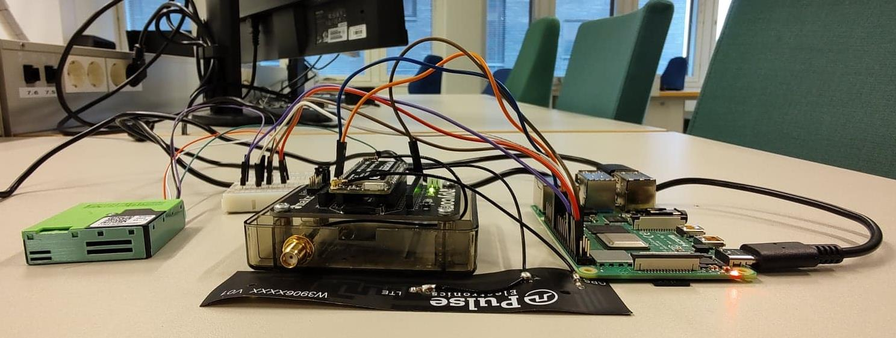
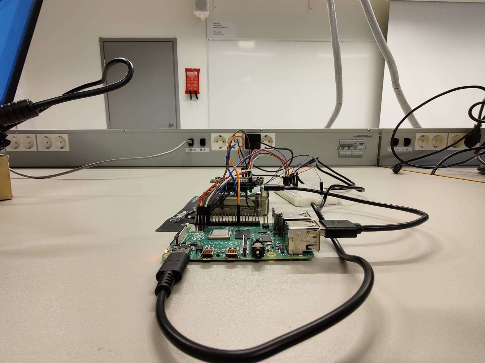

Amir Farhadi
Systems administration, IT infrastructure, and systems automation engineering background with hands-on experience in Linux/Windows OS administration, Docker container orchestration, automated system telemetry (InfluxDB & Grafana), PowerShell/Bash/Python scripting, secure networking (SSH, firewalls, reverse proxies), and AI-augmented operational troubleshooting.
Core Systems Competencies
🐧 Linux & Windows Administration
Configuring and administering Debian, Ubuntu, Raspbian, and Windows 10/11/Server environments. Managing systemd services, user/group permissions, Win32 APIs, registry, and event logging.
🌐 Networking & Security Hardening
Managing TCP/IP, DNS, DHCP, SSH/SFTP authentication, UFW/Windows firewall rules, SMB/NFS shares, reverse proxies (Nginx/Apache), and STUN/ICE NAT traversal.
🐳 Container Orchestration & Telemetry
Deploying microservice stacks via Docker & Docker Compose with ordered boot sequencing, persistent volume permissions, and real-time health telemetry via InfluxDB & Grafana.
⚡ Systems Automation & AI Scripting
Writing robust PowerShell, Bash, Python, and C# (.NET) automation scripts for scheduled health checks, log rotation, automated backups, and leveraging modern AI for rapid root-cause diagnosis.
1. Edge Linux Server & IoT Container Infrastructure
EU Horizon 2020 RESPONSE / City of Turku / FMIDeployed, configured, and administered modular Linux-based edge compute gateways (Raspberry Pi 4 & ESP32) collecting environmental telemetry for the Finnish Meteorological Institute (FMI). Engineered an isolated Docker microservice architecture with automated system health monitoring and time-series telemetry pipelines.
- Host Operating System: Debian-based Linux (Raspberry Pi OS) with systemd process management.
- Container Orchestration: Docker & Docker Compose managing isolated microservices (Broker, DB, Ingestion, Gateway).
- Security & Remote Access: Hardened SSH/SFTP access, key-based authentication, and UFW firewall rules.
- Boot Sequencing: Custom Bash startup scripts managing ordered container initialization and shared volume namespace permissions.
- Uptime & Telemetry: InfluxDB time-series metrics streaming to Grafana to monitor CPU load, memory utilization, and network link stability.
- Automated Recovery: Configured Docker container restart policies and watchdog services to eliminate system lockups.
- Fail-Safe Telemetry: Implemented local SQLite/InfluxDB caching buffers to prevent data loss during cellular network dropouts.
- Standard Operating Procedures: Authored comprehensive SOP documentation and deployment runbooks for repeatable server provisioning.


2. Windows & Linux Systems Automation & Diagnostics
Systems Engineering & Open SourceEngineered system-level utilities, automation scripts, and diagnostic tools in C# (.NET), Python, PowerShell, and Bash. Leveraged Win32 API interop and Inter-Process Communication (IPC) to automate multi-application workflows, monitor process health, and maintain 99.9% uptime for hands-free workstation infrastructure.
- Windows API Interop: C# (.NET) and Python utilities interfacing directly with User32/Kernel32 for window state inspection and process management.
- IPC Bridge: Thread-safe XML-RPC and socket-based hardware IPC bridges enabling external hardware controllers to trigger system actions.
- PowerShell Tooling: 40+ modular administrative scripts automating repetitive system configuration, diagnostic logging, and batch execution.
- AI-Augmented Workflows: Integrated LLM-driven diagnostic routines to parse application log dumps and automate root-cause triage.
- Crash Elimination: Diagnosed and resolved memory leaks, thread race conditions, and COM object lifecycle crashes across upstream repositories.
- Hardware Debouncing: Implemented software-level debounce filtering and state chording for external USB button peripherals.
- Open-Source Contributions: 3 merged upstream pull requests in production automation frameworks (Caster, Dragonfly, PyVDA) across 400+ commits.
- High-Reliability Uptime: Engineered fail-safe exception handling ensuring uninterrupted hands-free workstation operation.


3. Multi-Threaded Linux Home & Security Server
Embedded Systems LabArchitected a centralized Raspberry Pi Linux server managing multi-threaded sensor polling (GPIO, I2C), TCP/IP socket network alerts, and persistent metric logging. Configured systemd background services and automated network reconnect routines to maintain continuous telemetry flow across intermittent local network conditions.
- Platform: Raspberry Pi 4 running headless Debian Linux with systemd service isolation.
- Network Alerts: Custom TCP/IP socket client-server daemon with automated email/SMS dispatch.
- Sensor Bus: Multi-threaded polling of reed switch door contacts and BME280 environmental sensors.
- Service Daemon: Registered as a systemd service with automatic exponential-backoff restart.
- Network Recovery: Built-in socket reconnection loop handling DHCP lease renewals and Wi-Fi drops.
- Event Logging: Structured log outputs with timestamped event auditing.
4. Field Infrastructure & Cellular Network Verification
TEKsystems / SmartSky NetworksSupported lead field engineers in executing pre-deployment cellular and air-to-ground network verification tests across distributed cell tower sites. Operated Rohde & Schwarz spectrum analyzers, aligned directional antenna arrays, and verified telemetry data integrity.
- Instrumentation: Rohde & Schwarz FSH4 Handheld Spectrum Analyzer for interference mapping.
- Antenna Systems: Rigged and aligned high-gain omni and directional antenna masts.
- Site Safety: Strict compliance with OSHA, mobile lift, and job-site safety standards.
- Telemetry Export: Captured real-time RF trace dumps and exported CSV logs for HQ analysis.
- Site Verification: Conducted noise floor benchmarks before and after antenna positioning.
5. Systems Administration & IT Infrastructure Skills Matrix
Core Toolkit🖥️ Operating Systems
- Linux: Debian, Ubuntu, Raspbian, CentOS fundamentals
- Windows: Windows 10/11, Windows Server basics, Active Directory
- Services: Systemd, Cron jobs, Windows Task Scheduler
- APIs: Win32 API (User32, Kernel32), Registry, Event Viewer
🌐 Networking & Protocols
- Protocols: TCP/IP, UDP, DNS, DHCP, HTTP/HTTPS, SSH, SFTP
- Security: UFW, iptables, Windows Firewall, Key-based SSH
- File Sharing: SMB/CIFS, NFS network shares
- Web Servers: Nginx, Apache reverse proxies & virtual hosts
⚡ Scripting & Automation
- PowerShell: Administrative automation, log parsing, AD queries
- Bash: System maintenance scripts, boot config, log rotation
- Python: Automation daemons, socket servers, API integration
- C# (.NET): Desktop diagnostic tools, Win32 system hooks
📊 Telemetry, Containers & Tools
- Containers: Docker, Docker Compose, container networking
- Monitoring: InfluxDB (time-series), Grafana dashboards
- Databases: SQL (MySQL, SQLite), InfluxDB, MongoDB
- Methodologies: SOP authoring, Root Cause Analysis, Git